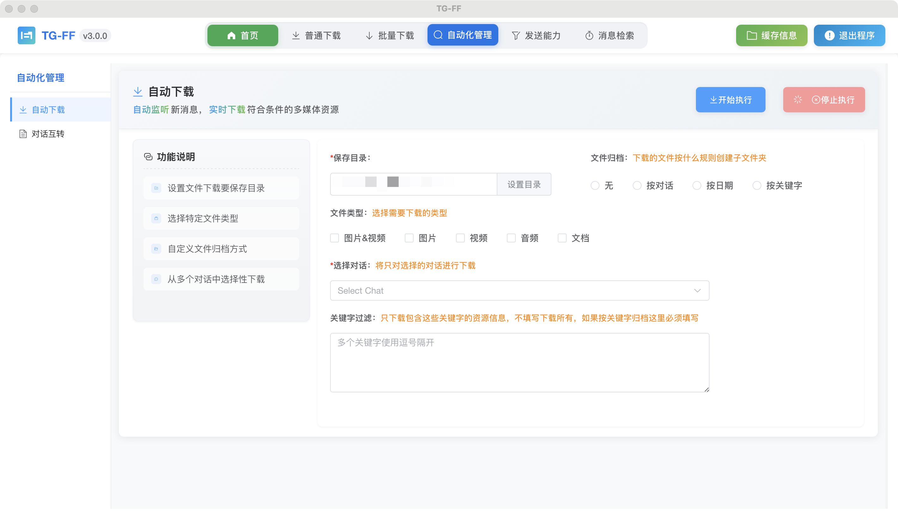

自动下载功能¶
本页面详细介绍TG-FF资源管理助手v3.0.0的自动下载功能。此功能可以监听新的消息，一旦收到符合设置条件的新消息，且消息中包含有图片或者视频，将进行自动下载。
功能说明¶
自动下载功能将对新的消息进行监听，一旦收到符合设置条件的新消息，且消息中包含有图片或者视频，将进行自动下载。这是一个实时监控功能，适合需要持续获取最新媒体资源的场景。
界面布局¶

自动下载模块的界面主要包含以下几个部分：
- 监听对话选择区 - 选择需要监听的对话来源
- 下载条件设置区 - 设置触发下载的筛选条件
- 保存位置设置 - 指定自动下载文件的保存目录
- 监听控制区 - 包含开始/停止监听按钮和状态显示
使用步骤¶
1. 选择监听对话¶
- 在"监听对话"下拉菜单中，浏览并选择需要监听的对话
- 可以选择个人聊天、群组或频道
- 也可以选择监听多个对话，点击"添加"按钮添加多个监听源
- 选择完成后，监听对话列表将显示在界面中
2. 设置下载条件¶
媒体类型筛选¶
- 在"媒体类型"选项中，选择需要下载的媒体类型：
- 图片：自动下载消息中的图片
- 视频：自动下载消息中的视频
- 可以同时选择两种类型
关键词筛选¶
- 在"关键词筛选"输入框中输入关键词
- 只有包含指定关键词的消息中的媒体才会被下载
- 可以设置多个关键词，用逗号分隔
- 留空则不进行关键词筛选
发送者筛选¶
- 在"发送者筛选"部分，选择是否限制特定发送者的消息
- 可以添加特定用户ID或用户名，只下载这些用户发送的媒体
- 也可以设置为排除特定用户发送的媒体
3. 设置保存目录¶
- 点击"选择文件夹"按钮
- 在弹出的文件夹选择对话框中，浏览并选择保存媒体文件的目标文件夹
- 点击"确定"确认选择
- 所选路径将显示在保存位置输入框中
4. 启动监听¶
- 完成上述设置后，点击"开始监听"按钮
- 系统将开始监听指定对话中的新消息
- 当收到符合条件的新消息且包含媒体文件时，会自动下载
- 当前监听状态和最近下载的文件信息将在状态区域显示
5. 停止监听¶
- 如需停止监听，点击"停止监听"按钮
- 监听将立即停止，不再下载新的媒体文件
高级设置¶
文件命名规则¶
- 点击"高级设置"展开更多选项
- 在"文件命名规则"下拉菜单中选择命名方式：
- 时间戳命名：使用消息接收时间作为文件名
- 发送者_时间：使用发送者名称和时间组合命名
- 原始文件名：尽可能保留原始文件名
下载通知设置¶
- 设置下载通知选项：
- 桌面通知：启用/禁用新下载时的桌面通知
- 声音提醒：启用/禁用下载完成时的声音提示
- 通知详情：选择通知中显示的信息详细程度
自动分类设置¶
- 开启"自动分类"选项，系统将根据规则自动整理下载的文件：
- 按对话分类：为每个对话创建单独的子文件夹
- 按日期分类：按日期创建子文件夹结构
- 按媒体类型分类：将图片和视频分别存放在不同文件夹
使用场景¶
实时资源采集¶
- 监听重要信息渠道的最新消息
- 自动保存包含关键信息的媒体内容
- 适合新闻采集、市场监控等场景
媒体内容归档¶
- 自动下载特定群组或频道的所有新媒体内容
- 建立完整的媒体资源库
- 适合内容创作者、研究人员等
重要信息备份¶
- 监听重要对话中的媒体文件
- 自动备份到本地，避免信息丢失
- 适合需要长期保存重要信息的场景
注意事项¶
- 长期运行：自动下载功能设计为可长期运行，但可能会占用系统资源
- 存储空间：长时间监听可能会下载大量文件，请确保存储空间充足
- 网络消耗：自动下载媒体文件会消耗网络带宽，请注意网络使用情况
- 软件启动：自动下载功能仅在软件运行时有效，关闭软件后将停止监听
- 重复文件：系统会自动检测并跳过重复的媒体文件，避免重复下载
常见问题解答¶
Q: 软件关闭后，自动下载功能还会运行吗？ A: 不会，自动下载功能需要软件处于运行状态。如果您需要长期监听，请保持软件运行或考虑设置软件开机自启动。
Q: 自动下载功能会影响电脑性能吗？ A: 自动下载功能对系统资源的占用相对较低，但长时间运行可能会占用一定内存和网络资源，建议在资源充足的设备上使用。
Q: 如何避免下载重复的文件？ A: 系统会自动检查文件哈希值，避免下载重复的媒体文件。如果文件名冲突，会自动添加序号或时间戳区分。
Q: 可以在多台设备上同时设置自动下载吗？ A: 可以，但请注意设置不同的保存路径或使用云同步文件夹，避免文件冲突或重复下载。